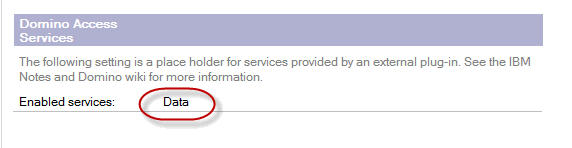
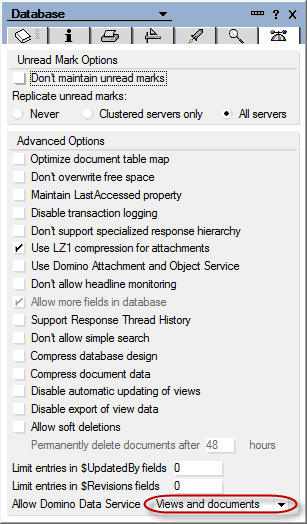

Server configuration
For the app to work, there are a number of things that have to be in place on the IBM Domino server that the app will access.
The Domino Data Service api is used to replicate with IBM Domino.
This requires the server to be either release 9+ or it can be release 8.5.3+ with the Extension Library or Upgrade Pack.
It also requires the server and discussion database to be configured to allow the use of the Domino Data Service api.
Getting the IBM Domino server ready for Domino Data Service
If the server is Release 9+, proceed to Server configuration. The features needed for Domino Data Service are installed automatically when installing R9.
If the server is Release 8.5.3 or newer, you need to make sure that either the Extension Library or the Upgrade Pack 1 (or newer) is installed.
If the server is a release before 8.5.3, you will not be able to enable the Domino Data Service, and the app will not work with the server.
The Upgrade Pack is basically the Extension Library repackaged in order to be IBM supported. instructions for installing
the Extension Library apply also for installing the Upgrade Pack. Instructions can be found on the documention wiki:
Installing and administering the XPages Extension Library.
Server configuration
On the Internet Site document for the host name that the app will access, you need to set this value:

Database configuration
The database has to be enabled for Domino Data Service. You find the property set here:

Be aware that this property gets overwritten if the database inherits its design from a template that does not have the same property.
So either you have to set the property in the template or you have to make sure that the database does not inherit its design from the template.
Server SSL certificate
The app can use SSL to replicate with the server. Replication is not actually Notes/Domino replication. It is HTTP or HTTPS communication.
The SSL certificate used on the server needs to be be issued from one of the major root certificate organisations.
A list of these is available in Android Root Certification Authorities List.
Other information
About the app | Server configuration | Developer information